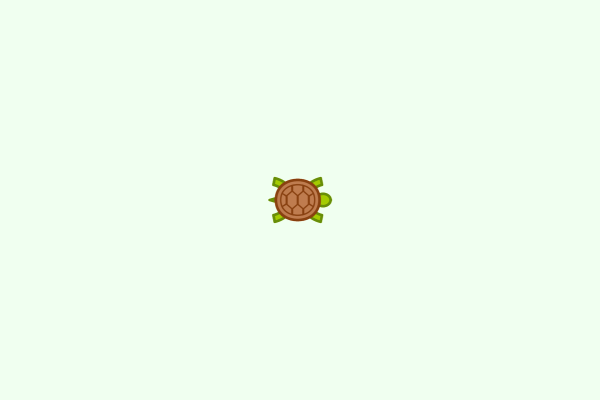
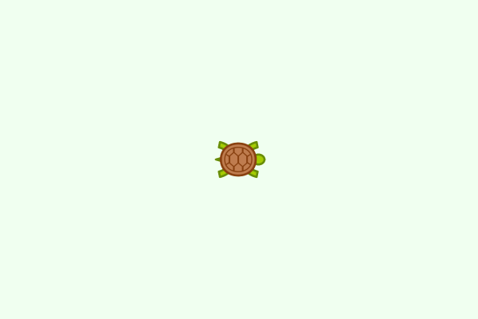
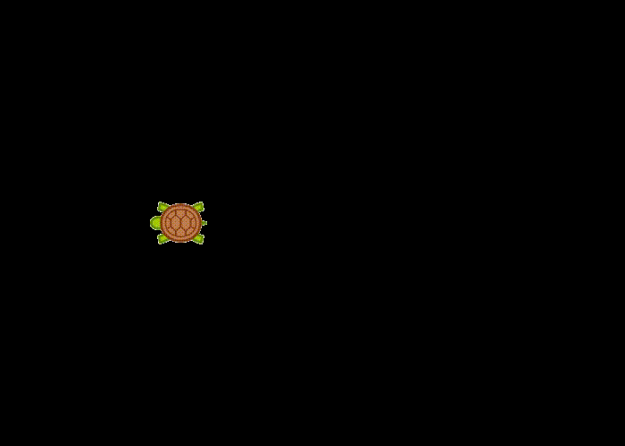
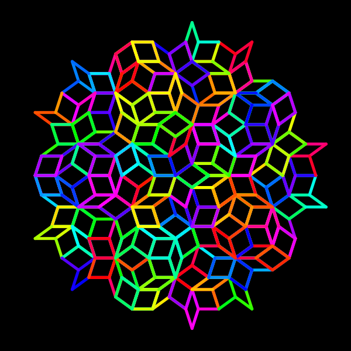

Introducing turtle graphics

Luxor includes "turtle graphics". This is a way of making drawings by steering an imaginary turtle around a 2D drawing surface. The turtle holds (somehow) a pen, and draws lines behind it, as it wanders around the drawing obeying your instructions.
How to type the turtle emoji
Luxor's turtles have names. You can call your turtles anything. If you like, you can create and name your turtle with a suitable emoji:
using Luxor
🐢 = Turtle() # type the turtle emoji \:turtle: TABThat's "backslash colon turtle colon tab" in VS-Code, for example. (It's Unicode character U+1F422.)
Or you can use any simple Julia variable name if you'd prefer:
raphael = Turtle()Then, you create a new drawing, and give the turtle some instructions.
A very simple turtle graphics drawing
Here's a very simple example:
using Luxor, Colors # hide
@drawsvg begin
background("honeydew")
🐢 = Turtle() # we create the turtle
Forward(🐢, 100) # go forward by 100 'steps'
Turn(🐢, 90) # turn 90° clockwise
Forward(🐢, 100) # go forward by 100 'steps'
Turn(🐢, 90) # turn 90° clockwise
Forward(🐢, 100) # go forward by 100 'steps'
endOr - with the same result, without using the drawing-creation macro (which saves a few keystrokes):
Drawing(500, 500, :png)
origin()
background("honeydew")
🐢 = Turtle()
Forward(🐢, 100)
Turn(🐢, 90)
Forward(🐢, 100)
Turn(🐢, 90)
Forward(🐢, 100)
finish()
preview()![Example block output]()
Forward(🐢, 100)tells the turtle called 🐢 to move forward 100 units. It's moved across the drawing, to the right.Turn(🐢, 90)tells the turtle called 🐢 to turn through 90° (clockwise)
and the two function calls are repeated, to give another line, and another turn, and another line.
Here's an animated view of how the image was made (I added the turtle):

Even with just these two instructions, you can make the turtle draw quite interesting things:

using Luxor, Colors # hide
@drawsvg begin
background("honeydew")
🐢 = Turtle()
for i in 1:200
Forward(🐢, 50 + i)
Turn(🐢, 85)
end
endThe smaller turn angle of 85° makes the pattern more interesting.
All the turtle instructions in Luxor.jl start with an uppercase letter. This isn't considered good practice in Julia code; initial capitalization is supposed to be restricted to module and type names. In Luxor, this bad habit (I was young once) at least helps to distinguish between turtle graphics commands and non-turtle graphics commands.
The idea of turtle graphics is that it's easy to build up complicated pictures just by repeating very simple instructions such as moving along a line and turning through angles.
Here's a function that draws a pentagon; move forward five times, turn through 72° after each move:
function a_pentagon(t::Turtle, s)
for i in 1:5
Forward(t, s)
Turn(t, 72.0)
end
end
@drawsvg begin
background("honeydew")
🐢 = Turtle()
Penwidth(🐢, 10)
Pencolor(🐢, "red")
for i in 1:5
a_pentagon(🐢, 100.0)
HueShift(🐢, 30)
Turn(🐢, 72)
end
end" fill-opacity="1"/>
<path fill="none" stroke-width="10" stroke-linecap="butt" stroke-linejoin="miter" stroke="rgb(100%25, 0%25, 0%25)" stroke-opacity="1" stroke-miterlimit="10" d="M 300 300 L 400 300 "/>
<path fill="none" stroke-width="10" stroke-linecap="butt" stroke-linejoin="miter" stroke="rgb(100%25, 0%25, 0%25)" stroke-opacity="1" stroke-miterlimit="10" d="M 400 300 L 430.902344 395.105469 "/>
<path fill="none" stroke-width="10" stroke-linecap="butt" stroke-linejoin="miter" stroke="rgb(100%25, 0%25, 0%25)" stroke-opacity="1" stroke-miterlimit="10" d="M 430.902344 395.105469 L 350 453.882812 "/>
<path fill="none" stroke-width="10" stroke-linecap="butt" stroke-linejoin="miter" stroke="rgb(100%25, 0%25, 0%25)" stroke-opacity="1" stroke-miterlimit="10" d="M 350 453.882812 L 269.097656 395.105469 "/>
<path fill="none" stroke-width="10" stroke-linecap="butt" stroke-linejoin="miter" stroke="rgb(100%25, 0%25, 0%25)" stroke-opacity="1" stroke-miterlimit="10" d="M 269.097656 395.105469 L 300 300 "/>
<path fill="none" stroke-width="10" stroke-linecap="butt" stroke-linejoin="miter" stroke="rgb(100%25, 50%25, 0%25)" stroke-opacity="1" stroke-miterlimit="10" d="M 300 300 L 330.902344 395.105469 "/>
<path fill="none" stroke-width="10" stroke-linecap="butt" stroke-linejoin="miter" stroke="rgb(100%25, 50%25, 0%25)" stroke-opacity="1" stroke-miterlimit="10" d="M 330.902344 395.105469 L 250 453.882812 "/>
<path fill="none" stroke-width="10" stroke-linecap="butt" stroke-linejoin="miter" stroke="rgb(100%25, 50%25, 0%25)" stroke-opacity="1" stroke-miterlimit="10" d="M 250 453.882812 L 169.097656 395.105469 "/>
<path fill="none" stroke-width="10" stroke-linecap="butt" stroke-linejoin="miter" stroke="rgb(100%25, 50%25, 0%25)" stroke-opacity="1" stroke-miterlimit="10" d="M 169.097656 395.105469 L 200 300 "/>
<path fill="none" stroke-width="10" stroke-linecap="butt" stroke-linejoin="miter" stroke="rgb(100%25, 50%25, 0%25)" stroke-opacity="1" stroke-miterlimit="10" d="M 200 300 L 300 300 "/>
<path fill="none" stroke-width="10" stroke-linecap="butt" stroke-linejoin="miter" stroke="rgb(100%25, 100%25, 0%25)" stroke-opacity="1" stroke-miterlimit="10" d="M 300 300 L 219.097656 358.777344 "/>
<path fill="none" stroke-width="10" stroke-linecap="butt" stroke-linejoin="miter" stroke="rgb(100%25, 100%25, 0%25)" stroke-opacity="1" stroke-miterlimit="10" d="M 219.097656 358.777344 L 138.195312 300 "/>
<path fill="none" stroke-width="10" stroke-linecap="butt" stroke-linejoin="miter" stroke="rgb(100%25, 100%25, 0%25)" stroke-opacity="1" stroke-miterlimit="10" d="M 138.195312 300 L 169.097656 204.894531 "/>
<path fill="none" stroke-width="10" stroke-linecap="butt" stroke-linejoin="miter" stroke="rgb(100%25, 100%25, 0%25)" stroke-opacity="1" stroke-miterlimit="10" d="M 169.097656 204.894531 L 269.097656 204.894531 "/>
<path fill="none" stroke-width="10" stroke-linecap="butt" stroke-linejoin="miter" stroke="rgb(100%25, 100%25, 0%25)" stroke-opacity="1" stroke-miterlimit="10" d="M 269.097656 204.894531 L 300 300 "/>
<path fill="none" stroke-width="10" stroke-linecap="butt" stroke-linejoin="miter" stroke="rgb(50%25, 100%25, 0%25)" stroke-opacity="1" stroke-miterlimit="10" d="M 300 300 L 219.097656 241.222656 "/>
<path fill="none" stroke-width="10" stroke-linecap="butt" stroke-linejoin="miter" stroke="rgb(50%25, 100%25, 0%25)" stroke-opacity="1" stroke-miterlimit="10" d="M 219.097656 241.222656 L 250 146.117188 "/>
<path fill="none" stroke-width="10" stroke-linecap="butt" stroke-linejoin="miter" stroke="rgb(50%25, 100%25, 0%25)" stroke-opacity="1" stroke-miterlimit="10" d="M 250 146.117188 L 350 146.117188 "/>
<path fill="none" stroke-width="10" stroke-linecap="butt" stroke-linejoin="miter" stroke="rgb(50%25, 100%25, 0%25)" stroke-opacity="1" stroke-miterlimit="10" d="M 350 146.117188 L 380.902344 241.222656 "/>
<path fill="none" stroke-width="10" stroke-linecap="butt" stroke-linejoin="miter" stroke="rgb(50%25, 100%25, 0%25)" stroke-opacity="1" stroke-miterlimit="10" d="M 380.902344 241.222656 L 300 300 "/>
<path fill="none" stroke-width="10" stroke-linecap="butt" stroke-linejoin="miter" stroke="rgb(0%25, 100%25, 0%25)" stroke-opacity="1" stroke-miterlimit="10" d="M 300 300 L 330.902344 204.894531 "/>
<path fill="none" stroke-width="10" stroke-linecap="butt" stroke-linejoin="miter" stroke="rgb(0%25, 100%25, 0%25)" stroke-opacity="1" stroke-miterlimit="10" d="M 330.902344 204.894531 L 430.902344 204.894531 "/>
<path fill="none" stroke-width="10" stroke-linecap="butt" stroke-linejoin="miter" stroke="rgb(0%25, 100%25, 0%25)" stroke-opacity="1" stroke-miterlimit="10" d="M 430.902344 204.894531 L 461.804688 300 "/>
<path fill="none" stroke-width="10" stroke-linecap="butt" stroke-linejoin="miter" stroke="rgb(0%25, 100%25, 0%25)" stroke-opacity="1" stroke-miterlimit="10" d="M 461.804688 300 L 380.902344 358.777344 "/>
<path fill="none" stroke-width="10" stroke-linecap="butt" stroke-linejoin="miter" stroke="rgb(0%25, 100%25, 0%25)" stroke-opacity="1" stroke-miterlimit="10" d="M 380.902344 358.777344 L 300 300 "/>
</svg>)
After the first pentagon is drawn by a_pentagon, the turtle rotates 72° - so the next pentagon doesn't overlap the previous one. We've used HueShift() as well, so that each pentagon is drawn in a different color, starting with redw.
More instructions
Turtles understand more instructions than just Forward and Turn:
Pendown(🐢)(the default)Penup(🐢)lift the pen from the drawingPencolor(🐢, r, g, b)change the color (default is (0, 0, 0) or "black")Penwidth(🐢, w)change the pen width towCircle(🐢, r)draw a filled circle with radiusrOrientation(🐢, θ)face θ°Rectangle(🐢, w, h)draw a rectangle with widthwand heighthReposition(🐢, pt)move the turtle to a new location pointMessage(🐢, t)draw the text intHueShift(🐢, h)change the hue of the pen's color by ah, or a small amount
plus a few more.
All these require a turtle name as the first argument. The full list is here: Turtle graphics.
This next drawing is also simple, but the gradual shifting hue - again thanks to HueShift() - is effective:
using Luxor, Colors
function draw_graphics()
🐢 = Turtle()
Pencolor(🐢, "cyan")
Penwidth(🐢, 1.5)
n = 5
for i in 1:400
Forward(🐢, n)
Turn(🐢, 89.5)
HueShift(🐢)
n += 1
end
fontsize(40)
Reposition(🐢, Point(-250, -250))
Pencolor(🐢, 1.0, 0.5, 0.0)
Message(🐢, "finished")
end
@drawsvg begin
draw_graphics()
endYou don't have to restrict yourself to drawing lines. With Circle() and Rectangle() you can create all kinds of images.
Here's a visualization of two ways to draw the Julia logo with a turtle.

The version on the left is drawn by the turtle on a journey:
using Luxor, Colors # hide
@drawsvg begin
colors = [Luxor.julia_purple, Luxor.julia_red, Luxor.julia_green]
🐢 = Turtle()
S = 50
Penup(🐢)
Turn(🐢, 30) ; Forward(🐢, S) ;
Pencolor(🐢, colors[1]); Pendown(🐢) ;
Circle(🐢, 40) ; Penup(🐢)
Turn(🐢, 150) ; Forward(🐢, 2S) ;
Pencolor(🐢, colors[2]) ; Pendown(🐢) ;
Circle(🐢, 40) ; Penup(🐢)
Turn(🐢, 120) ; Forward(🐢, 2S) ;
Pencolor(🐢, colors[3]) ; Pendown(🐢) ;
Circle(🐢, 40) ; Penup(🐢)
end THe version on the right repeats the same action three times:
using Luxor, Colors # hide
@drawsvg begin
colors = [Luxor.julia_purple, Luxor.julia_red, Luxor.julia_green]
🐢 = Turtle()
for i in 1:3
Push(🐢)
Orientation(🐢, [30, 150, 270][i])
Penup(🐢)
Forward(🐢, 120)
Pencolor(🐢, colors[i])
Pendown(🐢)
Circle(🐢, 80)
Pop(🐢)
end
endThe Push() instruction tells the turtle to remember the current position and rotation on a stack and continue. Pop() gets information from the stack and then teleports the turtle to that position and orientation - forgetting where it was and where it was heading. This way, the same task - turn-forward-pencolor-pendown-circle - is easily repeated in different directions.
Adding new commands
There's isn't a Back() instruction as you might expect - because it's not clear how it should work. For example, is it like putting a car in reverse and reversing, when you don't change the direction you're facing, or is it like turning through 180° and then going forward? And do you turn round afterwards?. But it's easy to add your own Back() command that does exactly what you want it to:
function Back(t::Turtle, n)
Turn(t, 180)
Forward(t, n)
Turn(t, 180) # looking forward again
end
function draw_graphics(🐢::Turtle)
for i in 1:8
Forward(🐢, 150)
Circle(🐢, 15)
Back(🐢, 100)
Turn(🐢, 45)
HueShift(🐢, 30)
Circle(🐢, 5)
end
end
@drawsvg begin
background("black")
🐢 = Turtle()
Penwidth(🐢, 30)
Pencolor(🐢, "blue")
draw_graphics(🐢)
endMore turtles
Here's the code for the abstract splash image at the top of this section:
using Luxor, Colors
Drawing(800, 300, "/tmp/turtles.svg")
origin()
background("black")
turtles = Turtle[]
for i in 1:100
turtle = Turtle(rand(BoundingBox()))
Pencolor(turtle, HSL(30rand(), 0.8, 0.7))
Orientation(turtle, 360rand())
Penwidth(turtle, .5)
push!(turtles, turtle)
for t in turtles
HueShift(t, 5)
Forward(t, rand(5:10))
Turn(t, rand(-15:15))
rand(Bool) ? Circle(t, 2) : Rectangle(t, 2, 2)
Pen_opacity_random(t)
pt = Point(t.xpos, t.ypos)
if !isinside(pt, box(BoundingBox()))
Towards(t, Point(0, 0))
end
end
end
finish()
preview()This code generates a hundred turtles in random positions and moves and turns them randomly. When a turtle reaches the edge, its orientation is changed so that it points to the center.
If you enjoy drawing with turtles, you might enjoy the Lindenmayer.jl package.
using Lindenmayer
using Luxor
using Colors
@draw begin
background("black")
setlinecap("round")
penrose = LSystem(["X" => "PM++QM----YM[-PM----XM]++t",
"Y" => "+PM--QM[---XM--YM]+t",
"P" => "-XM++YM[+++PM++QM]-t",
"Q" => "--PM++++XM[+QM++++YM]--YMt",
"M" => "F",
"F" => ""],
"[Y]++[Y]++[Y]++[Y]++[Y]")
# evaluate the LSystem
Lindenmayer.evaluate(penrose, 5)
# create a turtle
🐢 = Turtle(colorant"purple")
Penwidth(🐢, 5)
Pencolor(🐢, "cyan")
# render the LSystem's evaluation to the drawing
# forward 35, turn angle 36
Lindenmayer.render(penrose, 🐢, 35, 36)
end